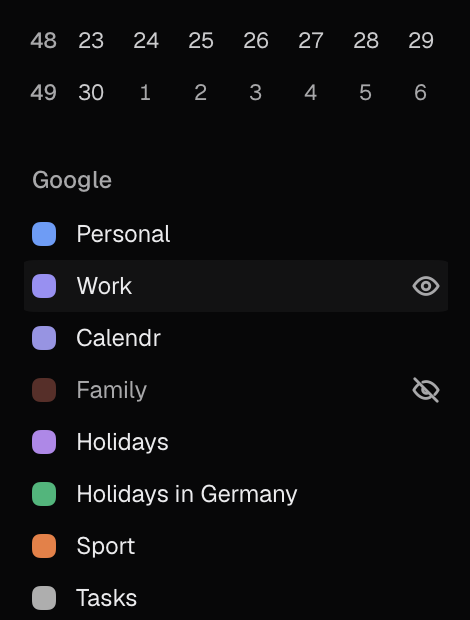

<!doctype html>
<html lang="en">
<head>
<meta charset="utf-8">
<meta name="viewport" content="width=device-width, initial-scale=1">
<title>Horion Corners</title>
<!-- Horion v12 round 1: corner radii. Every spot the radius audit changes, zoomed. -->
<style>
* { box-sizing: border-box; }
html, body { height: 100%; margin: 0; overflow: hidden; background: #08080a; color: #d8d8dc; font: 13px/1.4 -apple-system, system-ui, sans-serif; }
button { font: inherit; color: inherit; background: none; border: 0; cursor: pointer; text-align: inherit; padding: 0; }
input { font: inherit; color: inherit; background: none; border: 0; outline: 0; }
#root { display: flex; height: 100%; }
#stage { flex: 1; position: relative; overflow: hidden; }
.shot #picker { display: none; }

/* ---------- picker (outside the app) ---------- */
#picker { width: 380px; flex: none; border-left: 1px solid #222; background: #111113; overflow-y: auto; padding: 18px 18px 84px; }
#picker h1 { font-size: 15px; font-weight: 650; color: #f2f2f4; margin: 0; }
#picker h2 { font-size: 10.5px; text-transform: uppercase; letter-spacing: .07em; color: #6c6c74; font-weight: 600; margin: 22px 0 8px; }
#picker .lede { color: #8a8a92; font-size: 12px; margin: 4px 0 14px; }
.pk-btn { padding: 5px 9px; border-radius: 7px; background: #1b1b1f; color: #b4b4bb; font-size: 12px; border: 1px solid #26262b; }
.pk-btn:hover { background: #222227; color: #eee; }
.pk-btn.on { background: #ececf0; color: #111; border-color: #ececf0; }
.pk-scenes { display: grid; grid-template-columns: 1fr 1fr; gap: 4px; }
.pk-notes { padding: 10px 12px; border-radius: 9px; background: #17171a; border: 1px solid #222226; color: #a6a6ae; font-size: 12px; }
.pk-notes ul { margin: 0; padding-left: 15px; }
.pk-ba { display: flex; gap: 4px; align-items: center; margin-bottom: 10px; }
.pk-ba span { color: #6c6c74; font-size: 11px; margin-left: 4px; }
.pk-tog { display: flex; gap: 8px; align-items: center; color: #a6a6ae; font-size: 12px; margin-top: 6px; }
.pk-tog i { width: 24px; height: 14px; border-radius: 7px; background: #2a2a30; position: relative; flex: none; }
.pk-tog i::after { content: ""; position: absolute; left: 2px; top: 2px; width: 10px; height: 10px; border-radius: 50%; background: #8a8a92; transition: transform .15s; }
.pk-tog.on i { background: #ececf0; } .pk-tog.on i::after { transform: translateX(10px); background: #111; }
.pk-audit { margin-top: 8px; color: #8a8a92; font-size: 11.5px; }
.pk-audit b { color: #eee; }
.pk-dec { margin-bottom: 14px; }
.pk-dec > b { color: #f2f2f4; font-size: 12.5px; }
.pk-dec p { color: #8a8a92; font-size: 12px; margin: 3px 0 6px; }
.pk-new { color: #a6a6ae; font-size: 12px; margin: 3px 0 6px; }
.pk-new q { color: #e6e6ea; }
.pk-opt { display: flex; align-items: center; gap: 8px; width: 100%; padding: 5px 8px; border-radius: 7px; color: #b4b4bb; font-size: 12px; }
.pk-opt:hover { background: #1b1b1f; color: #eee; }
.pk-opt.on { color: #f4f4f6; background: #1d1d22; }
.pk-opt .r { width: 12px; height: 12px; border-radius: 50%; border: 1.5px solid #4a4a52; flex: none; }
.pk-opt.on .r { border-color: #f4f4f6; background: radial-gradient(#f4f4f6 0 2.5px, transparent 3px); }
.pk-opt .end { margin-left: auto; display: flex; gap: 6px; align-items: center; }
.pk-opt .rec, .pk-opt .lk { font-size: 10.5px; color: #6c6c74; }
.pk-opt .hq { width: 16px; height: 16px; border-radius: 50%; border: 1px solid #3a3a42; color: #8a8a92; font-size: 10px; display: inline-grid; place-items: center; position: relative; }
.pk-opt .hq:hover::after { content: attr(data-help); position: absolute; right: -4px; top: 22px; width: 270px; padding: 8px 10px; border-radius: 8px; background: #26262c; border: 1px solid #3a3a42; color: #e6e6ea; font-size: 11.5px; line-height: 1.45; white-space: normal; z-index: 10; }
.pk-lock { display: flex; justify-content: space-between; gap: 8px; font-size: 12px; padding: 3px 0; color: #8a8a92; }
.pk-lock b { font-weight: 500; color: #c4c4cb; }
.pk-foot { display: flex; flex-wrap: wrap; gap: 4px; margin-top: 22px; }
/* Agentation toolbar: bottom right of the app, not over the picker. */
.agt-host { right: 396px !important; bottom: 16px !important; }
#picker .read { color: #a6a6ae; font-size: 12px; margin: -6px 0 14px; padding-left: 10px; border-left: 2px solid #2a2a30; }
#picks { margin-top: 10px; width: 100%; height: 150px; background: #141417; color: #bdbdc4; border: 1px solid #25252a; border-radius: 8px; padding: 8px; font: 11px/1.45 ui-monospace, Menlo, monospace; resize: vertical; }

/* ---------- preview: crossfade, short glow, alignment guides ---------- */
.ghost { pointer-events: none; z-index: 140; transition: opacity 140ms ease; }
.pvhl { animation: pvpulse 900ms ease-out forwards; }
@keyframes pvpulse { 0% { box-shadow: 0 0 0 0 rgba(90,160,255,.9), 0 0 0 1.5px rgba(90,160,255,.9); } 60% { box-shadow: 0 0 0 8px rgba(90,160,255,0), 0 0 0 1.5px rgba(90,160,255,.9); } 100% { box-shadow: 0 0 0 8px rgba(90,160,255,0), 0 0 0 1.5px transparent; } }
#guides { position: absolute; inset: 0; pointer-events: none; z-index: 150; }
#guides .gv { position: absolute; width: 0; border-left: 1px solid rgba(64, 214, 120, .55); }
#guides .gv.r { border-left-color: rgba(90, 160, 255, .55); }
#guides .gv span { position: absolute; top: 2px; left: 2px; font: 9px ui-monospace, Menlo, monospace; color: rgba(64, 214, 120, .95); background: rgba(0,0,0,.6); padding: 0 2px; }
#guides .bx { position: absolute; outline: 1px solid rgba(255, 70, 90, .95); background: rgba(255, 70, 90, .12); }
#guides .bx span { position: absolute; top: -12px; left: 0; font: 9px ui-monospace, Menlo, monospace; color: #fff; background: rgba(220, 40, 60, .9); padding: 0 3px; white-space: nowrap; }
#guides .ol { position: absolute; outline: 1px dashed rgba(255, 255, 255, .14); }
#guides .legend { position: absolute; left: 12px; bottom: 12px; padding: 8px 10px; border-radius: 8px; background: rgba(10,10,12,.88); border: 1px solid rgba(255,255,255,.12); font: 11px/1.5 -apple-system, system-ui; color: #ddd; }

/* ================= the app: corner zoom board ================= */
@font-face { font-family: "Inter"; src: url("../mockup-v11/fonts/InterVariable.woff2") format("woff2"); font-weight: 100 900; }
.desk { --bg: #0B0B0C; --rail: #070708; --bg1: #151516; --bg3: #2A2A2C; --pop: #0B0B0C; --hoverPop: #18181A; --hover: #161617; --hoverRail: #121213; --eyeHover: #1F1F20;
  --selected: #1E1E1F; --hair: #1C1C1D; --hair2: #2A2A2C; --grid: #212123;
  --fg: #EBEBED; --fg2: #CCCCCE; --fg3: #A8A8AA; --act: #EBEBED; --onact: #0B0B0C;
  --blue: #0E1A2C; --blueBar: #4A78D8; --blueT: #DCE4F2; --orange: #26150B; --orangeBar: #C8671F; --orangeT: #F1DCCB;
  --board: #050506; --tile: #0E0E10; --tileEdge: #1A1A1D; --lab: #8A8A92;
  --font: "Inter", -apple-system, system-ui, sans-serif; --fs: 12.5px; --fs-s: 11px; }
.desk.paper { --bg: #FBFBFB; --rail: #F4F4F5; --bg1: #F1F1F2; --bg3: #DCDCDC; --pop: #FBFBFB; --hoverPop: #EEEEEF; --hover: #F1F1F1; --hoverRail: #EAEAEB; --eyeHover: #DFDFE0;
  --selected: #EAEAEB; --hair: #E8E8E8; --hair2: #DCDCDC; --grid: #E1E1E2;
  --fg: #1D1D20; --fg2: #4A4A50; --fg3: #606067; --act: #1D1D20; --onact: #FBFBFB;
  --blue: #E3ECFB; --blueBar: #3E6FD8; --blueT: #1C2E52; --orange: #FBE9DC; --orangeBar: #D0651B; --orangeT: #57290A;
  --board: #E9E9EA; --tile: #FBFBFB; --tileEdge: #DDDDDE; --lab: #6C6C74; }
.desk { position: absolute; left: 0; top: 0; transform-origin: 0 0; overflow: hidden; background: var(--board); color: var(--fg); font: var(--fs)/1.4 var(--font); display: flex; -webkit-font-smoothing: antialiased; }
.nav { width: 220px; flex: none; padding: 16px 12px; border-right: 1px solid var(--tileEdge); background: var(--tile); display: flex; flex-direction: column; gap: 2px; }
.nav .t { font-weight: 600; margin: 0 8px 10px; }
.nav button { height: 28px; padding: 0 8px; border-radius: 8px; color: var(--fg2); text-align: left; }
.nav button:hover { background: var(--hover); } .nav button.on { background: var(--selected); color: var(--fg); }
.nav .sp { flex: 1; }
.board { flex: 1; overflow: auto; padding: 24px; display: flex; flex-wrap: wrap; align-content: flex-start; gap: 20px; }
.tile { background: var(--tile); border: 1px solid var(--tileEdge); border-radius: 12px; padding: 14px 16px 16px; }
.tile h3 { margin: 0 0 2px; font-size: 13px; font-weight: 600; }
.tile .val { color: var(--lab); font-size: 11.5px; margin-bottom: 12px; }
.tile .val b { color: var(--fg); font-weight: 600; }
.pair { display: flex; gap: 24px; align-items: flex-start; }
.z4 { zoom: 4; } .z1 { opacity: .9; }
.cap { font-size: 10.5px; color: var(--lab); margin-top: 6px; }
.spot { background: var(--bg); position: relative; }

/* Day header today number */
.dh { display: flex; align-items: center; gap: 6px; height: 28px; padding: 0 8px; font-size: 12.5px; font-weight: 500; }
.dh .n { background: var(--act); color: var(--onact); font-weight: 600; padding: 0 5px; min-width: 20px; text-align: center; line-height: 18px; border-radius: var(--r-hdr); }
/* Month cell */
.mc { display: flex; width: 150px; height: 64px; }
.mc > div { flex: 1; border-right: 1px solid var(--grid); border-bottom: 1px solid var(--grid); padding: 4px; }
.mc .num { display: inline-block; height: 22px; min-width: 22px; padding: 0 6px; line-height: 22px; text-align: center; border-radius: var(--r-mon); font-size: 12.5px; }
.mc .num.today { background: var(--act); color: var(--onact); font-weight: 600; } .mc .num.hot { background: var(--hover); }
/* Event */
.ev { position: absolute; border-radius: 4px; background: var(--blue); color: var(--blueT); font-size: 11.5px; padding: 3px 6px 3px 10px; overflow: hidden; white-space: nowrap; }
.ev::before, .chip::before, .sk::before { content: ""; position: absolute; left: 3px; top: 3px; bottom: 3px; width: 3px; border-radius: 1.5px; background: var(--blueBar); }
.ev.o { background: var(--orange); color: var(--orangeT); } .ev.o::before { background: var(--orangeBar); }
.grid2 { width: 150px; height: 70px; border-left: 1px solid var(--grid); }
.pn { position: absolute; height: 16px; padding: 0 5px; min-width: 22px; text-align: center; font: 600 10.5px/16px var(--font); background: var(--bg3); color: var(--fg); border-radius: var(--r-pn); box-shadow: 0 0 0 1.5px var(--bg); }
/* All-day row */
.ad { display: flex; flex-direction: column; gap: 2px; width: 200px; padding: 4px 0; }
.chip { position: relative; height: 20px; margin: 0 4px 0 2px; border-radius: 4px; background: var(--blue); color: var(--blueT); font-size: 12px; padding: 0 8px 0 12px; line-height: 20px; white-space: nowrap; overflow: hidden; }
.ad .more { height: 20px; margin: 0 4px 0 2px; padding: 0 10px; line-height: 20px; font-size: 11px; border-radius: var(--r-adm); }
.hotbg { background: var(--hover); color: var(--fg); }
.mm { width: 150px; padding: 4px; border-right: 1px solid var(--grid); border-bottom: 1px solid var(--grid); display: flex; flex-direction: column; gap: 1px; }
.mm .ln { height: 18px; display: flex; align-items: center; gap: 6px; padding: 0 6px; font-size: 11.5px; white-space: nowrap; overflow: hidden; }
.mm .ln i { width: 6px; height: 6px; border-radius: 50%; background: var(--blueBar); flex: none; } .mm .ln.o i { background: var(--orangeBar); }
.mm .more { height: 18px; padding: 0 7px; line-height: 18px; font-size: 11px; border-radius: var(--r-mm); align-self: flex-start; }
/* Surfaces */
.pop { background: var(--pop); border: 1px solid var(--hair2); border-radius: 12px; box-shadow: 0 12px 24px rgba(0,0,0,.35); }
.paper .pop { box-shadow: 0 12px 24px rgba(20,20,30,.10); }
.stack { width: 200px; padding: 4px; display: flex; flex-direction: column; gap: 3px; }
.sk { position: relative; height: 28px; padding: 0 8px 0 12px; display: grid; grid-template-columns: 70px 1fr; align-items: center; background: var(--blue); color: var(--blueT); font-size: 12px; border-radius: var(--r-sk); white-space: nowrap; overflow: hidden; }
.sk.o { background: var(--orange); color: var(--orangeT); } .sk.o::before { background: var(--orangeBar); }
.sk span:first-child { opacity: .75; font-size: 11px; }
.menu { width: 190px; padding: 6px; }
.menu .it, .dl .it { height: 28px; padding: 0 10px; display: flex; align-items: center; gap: 8px; font-size: 12.5px; }
.menu .it { border-radius: var(--r-menu); } .menu .it.hot { background: var(--hoverPop); }
.menu .ck { width: 14px; text-align: center; color: var(--fg); font-size: 11px; }
.pal { width: 300px; padding: 6px; }
.pal .it { height: 32px; padding: 0 12px; display: flex; align-items: center; gap: 10px; font-size: 12.5px; border-radius: var(--r-pal); }
.pal .it.hot { background: var(--hoverPop); } .pal .k { margin-left: auto; color: var(--fg3); font-size: 11px; }
.pal .ic { width: 14px; height: 14px; border: 1.5px solid var(--fg3); border-radius: 4px; }
.dl { width: 190px; padding: 4px; } .dl .it { padding: 0 8px; border-radius: 8px; } .dl .it.hot { background: var(--hoverPop); }
.dl .b { width: 3px; height: 14px; border-radius: 1.5px; background: var(--blueBar); }
/* Buttons in rows */
.toast { height: 38px; display: flex; align-items: center; gap: 10px; padding: 0 5px 0 14px; border-radius: 12px; background: var(--pop); border: 1px solid var(--hair2); font-size: 12.5px; white-space: nowrap; }
.toast .undo { height: 26px; display: flex; align-items: center; gap: 7px; padding: 0 5px 0 9px; border-radius: var(--r-undo); background: var(--hoverPop); font-weight: 600; }
.kc { font-size: 10.5px; color: var(--fg3); font-weight: 500; }
.toast .x { width: 22px; height: 22px; display: grid; place-items: center; color: var(--fg3); }
.side { width: 210px; padding: 6px 8px; background: var(--rail); }
.cal { height: 26px; display: flex; align-items: center; gap: 10px; padding: 0 4px 0 8px; margin: 0 -4px; border-radius: 8px; font-size: 12.5px; }
.cal.hot { background: var(--hoverRail); }
.cal .cb { width: 12px; height: 12px; border-radius: 4px; background: var(--blueBar); flex: none; }
.cal .eye { margin-left: auto; width: 22px; height: 22px; display: grid; place-items: center; color: var(--fg3); border-radius: var(--r-eye); }
.cal .eye.hot { background: var(--eyeHover); color: var(--fg); }
.rems { width: 220px; padding: 6px 16px; }
.rem { height: 28px; display: flex; align-items: center; gap: 6px; padding: 0 8px; margin: 0 -8px; border-radius: 8px; font-size: 12.5px; }
.rem.hot { background: var(--hoverRail); } .rem .dim { color: var(--fg3); }
.rem .rx { margin-left: auto; width: 20px; height: 20px; display: grid; place-items: center; border-radius: var(--r-rx); background: var(--eyeHover); color: var(--fg2); font-size: 10px; }
/* Skeleton */
.skel { width: 200px; padding: 16px; background: var(--bg1); border: 1px solid var(--hair); border-radius: 12px; }
.skel i { display: block; height: 10px; margin-bottom: 9px; background: var(--hair2); border-radius: var(--r-skel); }
.skel p { margin: 4px 0 0; font-size: 11.5px; color: var(--fg2); line-height: 1.45; }
/* round 2 */
.cal .eye svg, .rem .rx svg { display: block; }
.side.ctx { width: 230px; padding: 6px 10px; }
.cal.off { color: var(--fg3); } .cal.off .cb { opacity: .55; }
.desk.eye-even2 .cal { padding-right: 2px; }
.desk.eyes-plain .cal .eye.hot { background: none; color: var(--fg); }
.desk.eyes-none .cal .eye { display: none; }
.desk.eyes-none .cal.off .cb { background: none !important; box-shadow: inset 0 0 0 1.5px var(--fg3); opacity: 1; }
.desk.rx-even4 .rem { padding-right: 4px; } .desk.rx-even4 .rem .rx { border-radius: 4px; }
.desk.rx-big24 .rem { padding-right: 2px; } .desk.rx-big24 .rem .rx { width: 24px; height: 24px; border-radius: 6px; }
</style>
</head>
<body>
<div id="root"><div id="stage"><div class="desk" id="desk"></div></div><aside id="picker"></aside></div>
<script>
// ================= edit for each round =================
const PRODUCT = 'Horion', VERSION = 'v12', ROUND = 2;
const DESK = { w: 1440, h: 900 };
const SCENES = [['today', 'Today numbers'], ['more', '"+N" and "more"'], ['menus', 'Menus and lists'], ['inrow', 'Buttons inside rows'], ['skel', 'Loading sidebar'], ['eyectx', 'Eye in context'], ['all', 'All spots']];
const HOWTO = ['Each tile shows one corner at 3× and at real size.', 'Hover an option to see it; click to pick.', 'Ink / Paper (left) switches the theme.', 'Scale: 4 events and chips · 8 controls · 12 surfaces · 6 = a row inside a 12 surface with 6 padding.'];
const READ = 'Quiet tool UI: corners come from one scale (4 / 8 / 12), nested shapes stay concentric. Dials: variance 2, motion 2, density 7.';
const LOCKED = { hdr: '6', mon: '6', pn: '4', adm: '4', mm: '4', sk: '8', menu: '6', pal: '6', undo: '6', eye: '6', rx: '6', skel: '4' };
const BEFORE = {};
const FB = 'show me everywhere where this would make a difference … let me decide where its best';
const P = (v, l, h) => [v, l, h];
const FB2 = 'padding around the btn looks weird';
const DECISIONS = [
  { id: 'rxpad', name: 'Space around ✕ on a reminder row', fb: FB2, note: 'Hovered reminder row. Now: 4 pt above and below the ✕, 8 pt to its right.', scene: 'inrow', hl: '[data-k="rx"]', opts: [
    P('even4', 'Even 4 pt all round, 4 pt corners', 'Row trailing padding 8 → 4. The ✕ stays 20 pt; 8 − 4 = 4 pt corners, so it is concentric with the row.'),
    P('big24', 'Bigger ✕ (24 pt), even 2 pt, 6 pt corners', 'The ✕ grows to 24 pt and sits 2 pt from the row edge on three sides; 8 − 2 = 6 pt corners.'),
    P('now', 'As now (4 pt above, 8 pt right, 6 pt corners)', 'Round 1 pick with today’s spacing.')] },
  { id: 'eyepad', name: 'Space around the eye in a sidebar row', fb: 'here as well', note: 'Hovered calendar row. Now: 2 pt above and below the eye, 4 pt to its right.', scene: 'inrow', hl: '[data-k="eye"]', opts: [
    P('even2', 'Even 2 pt all round, 6 pt corners', 'Row trailing padding 4 → 2. 8 − 2 = 6 pt corners, concentric with the row.'),
    P('now', 'As now (2 pt above, 4 pt right)', 'Round 1 pick with today’s spacing.')] },
  { id: 'eyestyle', name: 'Eye button look', fb: 'im not sure if i like it. but i gotta see it in the grand context', note: 'See "Eye in context": the real sidebar, then the options.', scene: 'eyectx', hl: '[data-k="eyectx"]', opts: [
    P('box', 'Box behind the eye on hover (now)', 'Hovering the row shows the eye; hovering the eye adds a 6 pt box behind it.'),
    P('plain', 'No box, the eye brightens', 'Hovering the eye only turns it from grey to white. Nothing to align.'),
    P('none', 'No eye; click the colour square to hide', 'The square becomes the toggle (hollow when hidden). The row loses the button.')] },
  { g: 'Round 1', lock: true, id: 'hdr', name: 'Today number, week header', fb: FB, note: 'Week and day view header: "Sun 4".', scene: 'today', hl: '[data-k="hdr"]', opts: [
    P('4', '4 pt square-ish, like events', 'Same 4 pt as event blocks and all-day chips. Matches mockup-v11.'), P('6', '6 pt, softer', 'Between the event and control radii.'), P('pill', 'Pill (now)', 'Fully round ends, as the app draws it today.')] },
  { g: 'Round 1', lock: true, id: 'mon', name: 'Today number, month view', fb: FB, note: 'Month cell number; the hover on other days uses the same shape.', scene: 'today', hl: '[data-k="mon"]', opts: [
    P('4', '4 pt, like the week header', 'Same shape as the week header number.'), P('6', '6 pt', 'A little rounder.'), P('pill', 'Pill (now, 11 pt)', 'A 22 pt circle for one digit, as the app draws it today.')] },
  { g: 'Round 1', lock: true, id: 'pn', name: '"+N" button on crowded events', fb: FB, note: 'Time grid: the "+2" over an overlap group. It is a 16 pt chip.', scene: 'more', hl: '[data-k="pn"]', opts: [
    P('4', '4 pt, like the events under it', 'Reads as a small chip of the same family as the events.'), P('pill', 'Pill (now)', 'Round ends; reads as a badge, not a chip.'), P('6', '6 pt', 'Almost a pill at 16 pt high.')] },
  { g: 'Round 1', lock: true, id: 'adm', name: '"+N more" hover, all-day row', fb: FB, note: 'Hovered, next to the all-day chips.', scene: 'more', hl: '[data-k="adm"]', opts: [
    P('4', '4 pt, same as the chips above', 'The hover has the same corners as the chips it lines up with.'), P('8', '8 pt (now)', 'Control radius; rounder than its neighbours.')] },
  { g: 'Round 1', lock: true, id: 'mm', name: '"N more" hover, month cell', fb: FB, note: 'Hovered, under the month event lines.', scene: 'more', hl: '[data-k="mm"]', opts: [
    P('4', '4 pt, same as the event lines', 'Matches the month event lines above it.'), P('5', '5 pt (now)', 'A one-off value, not on the scale.'), P('8', '8 pt', 'Control radius.')] },
  { g: 'Round 1', lock: true, id: 'sk', name: 'Events in the "+N" stack panel', fb: FB, note: 'Panel is 12 pt with 4 pt padding, so 8 pt rows are concentric.', scene: 'menus', hl: '[data-k="sk"]', opts: [
    P('8', '8 pt, concentric with the panel (as before)', '12 − 4 padding = 8. The rows hug the panel corners.'), P('4', '4 pt, same as events in the grid', 'Events look the same everywhere, but the corners do not follow the panel.')] },
  { g: 'Round 1', lock: true, id: 'menu', name: 'Editor menu rows', fb: FB, note: 'Menu is 12 pt with 6 pt padding.', scene: 'menus', hl: '[data-k="menu"]', opts: [
    P('6', '6 pt, concentric', '12 − 6 padding = 6. The hovered row follows the menu corner.'), P('8', '8 pt (now)', 'Control radius; the row is rounder than the gap allows.'), P('4', '4 pt', 'Squarer than the menu.')] },
  { g: 'Round 1', lock: true, id: 'pal', name: '⌘K palette rows', fb: FB, note: 'Palette list is 12 pt with 6 pt padding.', scene: 'menus', hl: '[data-k="pal"]', opts: [
    P('6', '6 pt, concentric', 'Same rule as the editor menus.'), P('8', '8 pt (now)', 'Control radius.')] },
  { g: 'Round 1', lock: true, id: 'undo', name: 'Undo button in the toast', fb: FB, note: 'Hovered. Toast is 12 pt; the button sits 5–6 pt inside it.', scene: 'inrow', hl: '[data-k="undo"]', opts: [
    P('6', '6 pt, concentric', 'Follows the toast corner on the right.'), P('8', '8 pt (now)', 'Control radius.')] },
  { g: 'Round 1', lock: true, id: 'eye', name: 'Eye button in a sidebar row', fb: FB, note: 'Hovered row (8 pt) with the eye (22 pt) 2–4 pt inside it.', scene: 'inrow', hl: '[data-k="eye"]', opts: [
    P('6', '6 pt, inside the 8 pt row', 'A step smaller than the row around it.'), P('8', '8 pt (now)', 'Same as the row; the corners crowd.'), P('4', '4 pt', 'Squarer, like a checkbox.')] },
  { g: 'Round 1', lock: true, id: 'rx', name: 'Remove (✕) on a reminder row', fb: FB, note: 'Hovered row (8 pt) with the 20 pt ✕ inside it.', scene: 'inrow', hl: '[data-k="rx"]', opts: [
    P('6', '6 pt, inside the 8 pt row', 'A step smaller than the row.'), P('8', '8 pt (now)', 'Same as the row.'), P('4', '4 pt', 'Squarer.')] },
  { g: 'Round 1', lock: true, id: 'skel', name: 'Loading bars in the sidebar', fb: FB, note: 'Only shown before calendar access. Bars are 10 pt high.', scene: 'skel', hl: '[data-k="skel"]', opts: [
    P('4', '4 pt', 'Soft rectangles, like text lines.'), P('pill', 'Pill (now, 8 pt on 10 pt)', 'Fully round ends.'), P('2', '2 pt', 'Nearly square.')] },
];
const SCENE_OF = { today: ['hdr', 'mon'], more: ['pn', 'adm', 'mm'], menus: ['sk', 'menu', 'pal'], inrow: ['undo', 'eye', 'rx'], skel: ['skel'], eyectx: ['eyectx'] };
SCENE_OF.all = Object.values(SCENE_OF).flat().filter(x => x !== 'eyectx');

// ================= demo data =================
function fresh() { return {}; }

// ================= the app =================
const esc = s => String(s ?? '').replace(/&/g, '&amp;').replace(/</g, '&lt;').replace(/"/g, '&quot;');
const px = v => v === 'pill' ? '999px' : v + 'px';
const lbl = v => v === 'pill' ? 'pill' : v + ' pt';
function deskClass() { return `${S.paper ? 'paper' : ''} rx-${C('rxpad')} eye-${C('eyepad')} eyes-${C('eyestyle')}`; }
const SPOTS = {
  hdr: () => `<div class="spot dh">Sun <span class="n">4</span></div>`,
  mon: () => `<div class="spot mc"><div><span class="num today">4</span></div><div><span class="num hot">5</span></div></div>`,
  pn: () => `<div class="spot grid2"><div class="ev" style="left:2px;top:4px;width:66px;height:60px">Dinner</div><div class="ev o" style="left:70px;top:4px;width:58px;height:40px">Club</div><div class="pn" style="right:6px;top:6px">+2</div></div>`,
  adm: () => `<div class="spot ad"><div class="chip">Trip (maybe)</div><div class="chip">Alex away</div><div class="more hotbg">+5 more</div></div>`,
  mm: () => `<div class="spot mm"><div class="ln"><i></i>Deep work</div><div class="ln o"><i></i>Lunch with Maya</div><div class="more hotbg">2 more</div></div>`,
  sk: () => `<div class="spot" style="padding:10px;background:var(--bg)"><div class="pop stack"><div class="sk"><span>18:15–19:00</span><span>Hiring sync</span></div><div class="sk o"><span>18:30–19:30</span><span>Climbing</span></div><div class="sk"><span>18:45–19:15</span><span>Call Kim</span></div></div></div>`,
  menu: () => `<div class="spot" style="padding:10px;background:var(--bg)"><div class="pop menu"><div class="it"><span class="ck">✓</span>10 min before</div><div class="it hot"><span class="ck"></span>15 min before</div><div class="it"><span class="ck"></span>30 min before</div></div></div>`,
  pal: () => `<div class="spot" style="padding:10px;background:var(--bg)"><div class="pop pal"><div class="it hot"><span class="ic"></span>Go to date…<span class="k">⌘ G</span></div><div class="it"><span class="ic"></span>New event<span class="k">⌘ N</span></div></div></div>`,
  undo: () => `<div class="spot" style="padding:10px;background:var(--bg)"><div class="toast">Moved to Thu 1 Oct, 12:00<span class="undo">Undo <span class="kc">⌘ Z</span></span><span class="x">✕</span></div></div>`,
  eye: () => `<div class="spot side"><div class="cal"><i class="cb"></i>Personal</div><div class="cal hot"><i class="cb" style="background:var(--orangeBar)"></i>Family<span class="eye hot">${EYE}</span></div></div>`,
  eyectx: () => `<div class="spot side ctx">${[['Personal', '#6E9BF2'], ['Work', '#9A92F0', 'hot'], ['Horion', '#9A92F0'], ['Family', '#5A2E2A', 'off'], ['Holidays', '#B48CF0'], ['Sport', '#E8874B']].map(([n, c, st]) => `<div class="cal ${st === 'hot' ? 'hot' : ''} ${st === 'off' ? 'off' : ''}"><i class="cb" style="background:${c}"></i>${n}${st === 'hot' ? `<span class="eye hot">${EYE}</span>` : st === 'off' ? `<span class="eye">${EYEOFF}</span>` : ''}</div>`).join('')}</div>`,
  rx: () => `<div class="spot rems"><div class="rem">10 min <span class="dim">before</span></div><div class="rem hot">1 hour <span class="dim">before</span><span class="rx">✕</span></div></div>`,
  skel: () => `<div class="spot" style="padding:10px;background:var(--rail)"><div class="skel"><i style="width:132px"></i><i style="width:96px"></i><i style="width:118px"></i><p>Your calendars appear here once Horion can read them.</p></div></div>`,
};
const EYE = '<svg width="14" height="14" viewBox="0 0 16 16" fill="none" stroke="currentColor" stroke-width="1.4"><path d="M1.5 8s2.4-4.5 6.5-4.5S14.5 8 14.5 8 12.1 12.5 8 12.5 1.5 8 1.5 8z"/><circle cx="8" cy="8" r="2"/></svg>', EYEOFF = '<svg width="14" height="14" viewBox="0 0 16 16" fill="none" stroke="currentColor" stroke-width="1.4"><path d="M1.5 8s2.4-4.5 6.5-4.5S14.5 8 14.5 8 12.1 12.5 8 12.5 1.5 8 1.5 8z"/><circle cx="8" cy="8" r="2"/><path d="M2.5 2.5l11 11"/></svg>';
const VARS = { hdr: '--r-hdr', mon: '--r-mon', pn: '--r-pn', adm: '--r-adm', mm: '--r-mm', sk: '--r-sk', menu: '--r-menu', pal: '--r-pal', undo: '--r-undo', eye: '--r-eye', rx: '--r-rx', skel: '--r-skel' };
function app() {
  const vars = Object.entries(VARS).map(([id, v]) => `${v}:${px(C(id))}`).join(';');
  const now = { hdr: 'pill', mon: 'pill', pn: 'pill', adm: '8', mm: '5', sk: '8', menu: '8', pal: '8', undo: '8', eye: '8', rx: '8', skel: 'pill' };
  const z = S.scene === 'all' ? 2 : 3;
  const tiles = SCENE_OF[S.scene].map(id => {
    if (id === 'eyectx') return `<div class="tile" data-k="eyectx"><h3>Eye in context</h3><div class="val">Left: the real app (v11 sidebar, Work hovered). Right: <b>${esc((DECISIONS.find(x => x.id === 'eyestyle').opts.find(o => o[0] === C('eyestyle')) || [])[1])}</b>, hover on Work.</div>
      <div class="pair"><div><div class="cap">real app, 1×</div></div><div><div style="zoom:2">${SPOTS.eyectx()}</div><div class="cap">2×</div></div></div></div>`;
    const d = DECISIONS.find(x => x.id === id);
    return `<div class="tile" data-k="${id}"><h3>${esc(d.name)}</h3><div class="val">Showing <b>${lbl(C(id))}</b> · now in the app: ${lbl(now[id])}</div>
      <div class="pair"><div><div style="zoom:${z}">${SPOTS[id]()}</div><div class="cap">${z}×</div></div><div class="z1">${SPOTS[id]()}<div class="cap">real size</div></div></div></div>`;
  }).join('');
  const nav = SCENES.map(([id, n]) => `<button class="${S.scene === id ? 'on' : ''}" data-go="${id}">${n}</button>`).join('');
  return `<div class="nav" data-area="nav"><div class="t">Corners</div>${nav}<div class="sp"></div><button data-theme="1">${S.paper ? 'Paper → Ink' : 'Ink → Paper'}</button></div><div class="board" data-area="board" style="${vars}">${tiles}</div>`;
}
function appClick(t) {
  if (t.dataset.go) S.scene = t.dataset.go;
  else if (t.dataset.theme) S.paper = !S.paper;
  else return false;
  return true;
}

// ================= picker machinery: keep =================
const KEY = `designr-${PRODUCT}-${VERSION}`;
let S = null;
try { S = JSON.parse(localStorage.getItem(KEY)); } catch (e) {}
S = S || { c: {}, scene: SCENES[0][0], hover: true };
DECISIONS.forEach(d => { if (!(d.id in S.c)) S.c[d.id] = d.lock ? LOCKED[d.id] : d.opts[0][0]; });
let A = fresh(), PV = null;
const C = id => (S.before && id in BEFORE ? BEFORE[id] : S.c[id]);
const save = () => { try { localStorage.setItem(KEY, JSON.stringify(PV ? { ...S, c: { ...S.c, [PV.id]: PV.orig } } : S)); } catch (e) {} };
const desk = document.getElementById('desk'), picker = document.getElementById('picker');
const shot = location.hash.includes('&shot');
if (shot) document.body.classList.add('shot');

function fit() {
  const st = document.getElementById('stage').getBoundingClientRect();
  // Scale so the real window fits, then grow the app to fill the stage: no empty space.
  // Shots (#scene&shot) keep the exact DESK size.
  const k = shot ? 1 : Math.min(st.width / DESK.w, st.height / DESK.h, 1);
  desk.style.width = (shot ? DESK.w : st.width / k) + 'px'; desk.style.height = (shot ? DESK.h : st.height / k) + 'px';
  desk.style.transform = `scale(${k})`;
}
// fade: the old frame stays on top and fades out in 140 ms (hover previews only).
function render(fade) {
  if (fade && !shot) {
    const g = desk.cloneNode(true); g.removeAttribute('id'); g.classList.add('ghost'); g.querySelector('#guides')?.remove();
    desk.after(g); requestAnimationFrame(() => requestAnimationFrame(() => { g.style.opacity = 0; })); setTimeout(() => g.remove(), 200);
  }
  desk.className = 'desk ' + deskClass();
  desk.innerHTML = app();
  markPreview(); audit(); drawGuides();
}
function preset(id) { S.scene = id; A.sel = null; save(); renderPicker(); }

const optLabel = d => (d.opts.find(o => o[0] === C(d.id)) || [0, C(d.id)])[1];
function renderPicker() {
  const open = DECISIONS.filter(d => !d.lock), locked = DECISIONS.filter(d => d.lock);
  const radios = d => d.opts.map(([v, l, help], i) => {
    const tag = d.lock ? (LOCKED[d.id] === v ? '<span class="lk">locked</span>' : '') : i === 0 ? '<span class="rec">recommended</span>' : '';
    return `<button class="pk-opt ${C(d.id) === v ? 'on' : ''}" data-d="${d.id}" data-v="${v}"><span class="r"></span>${esc(l)}<span class="end">${tag}${help ? `<span class="hq" data-help="${esc(help)}">?</span>` : ''}</span></button>`;
  }).join('');
  let h = `<h1>${PRODUCT} ${VERSION} · round ${ROUND}</h1><p class="lede">${open.length} open. Hover an option to see it. ? explains it.</p>${READ ? `<p class="read">${esc(READ)}</p>` : ''}`;
  if (Object.keys(BEFORE).length) h += `<div class="pk-ba"><button class="pk-btn ${S.before ? 'on' : ''}" data-a="before">Before</button><button class="pk-btn ${S.before ? '' : 'on'}" data-a="after">After</button><span>B</span></div>`;
  h += `<div class="pk-notes"><ul>${HOWTO.map(n => `<li>${n}</li>`).join('')}</ul></div>`;
  h += `<h2>Jump to</h2><div class="pk-scenes">${SCENES.map(([id, n]) => `<button class="pk-btn ${S.scene === id ? 'on' : ''}" data-scene="${id}">${n}</button>`).join('')}</div>`;
  h += `<button class="pk-tog ${S.hover !== false ? 'on' : ''}" data-a="hover"><i></i>Preview on hover</button><button class="pk-tog ${S.guides ? 'on' : ''}" data-a="guides"><i></i>Alignment guides (G)</button><button class="pk-tog ${S.agt !== false ? 'on' : ''}" data-a="agt"><i></i>Notes on elements (Agentation)</button><div class="pk-audit" id="agt-state">${esc(AGT_MSG)}</div><div class="pk-audit" id="audit"></div>`;
  h += `<h2>Open</h2>${open.length ? '' : '<p class="lede">Nothing open.</p>'}`;
  open.forEach(d => { h += `<div class="pk-dec"><b>${esc(d.name)}</b>${d.fb ? `<div class="pk-new">You said: <q>${esc(d.fb)}</q></div>` : ''}${d.note ? `<p>${esc(d.note)}</p>` : ''}${radios(d)}</div>`; });
  h += `<h2>Locked (${locked.length})</h2>`;
  if (!S.unlock) {
    h += locked.map(d => `<div class="pk-lock"><b>${esc(d.name)}</b><span>${esc(optLabel(d))}${C(d.id) !== LOCKED[d.id] ? ' · changed' : ''}</span></div>`).join('');
    if (locked.length) h += `<button class="pk-btn" style="margin-top:8px" data-a="unlock">Unlock to compare</button>`;
  } else {
    h += `<button class="pk-btn" data-a="unlock">Hide the locked options</button>`;
    locked.forEach(d => { h += `${d.g ? `<h2>${esc(d.g)}</h2>` : ''}<div class="pk-dec"><b>${esc(d.name)}</b>${radios(d)}</div>`; });
  }
  h += `<div class="pk-foot"><button class="pk-btn" data-a="copy">Copy my picks</button><button class="pk-btn" data-a="reset">Back to locked picks</button><button class="pk-btn" data-a="demo">Reset demo data</button></div><textarea id="picks" readonly></textarea>`;
  const top = picker.scrollTop; picker.innerHTML = h; picker.scrollTop = top;
  document.getElementById('picks').value = picksText();
  render();
}
function picksText() {
  const line = d => `- ${d.name}: ${optLabel(d)}${d.lock ? (C(d.id) !== LOCKED[d.id] ? ' (changed from the locked pick)' : '') : C(d.id) === d.opts[0][0] ? '' : ' (not the recommendation)'}`;
  const scene = id => (SCENES.find(x => x[0] === id) || [0, id])[1];
  const notes = (S.notes || []).map(n => `- ${scene(n.scene)} · \`${n.path}\`${n.text ? ` ("${n.text}")` : ''}: ${n.comment}`).join('\n');
  return `# ${PRODUCT} ${VERSION} round ${ROUND} picks\n## Open\n${DECISIONS.filter(d => !d.lock).map(line).join('\n') || '- Nothing open'}\n## Locked\n${DECISIONS.filter(d => d.lock).map(line).join('\n')}${notes ? `\n## Notes on elements\n${notes}` : ''}\n## Notes\n- `;
}
// Agentation state line in the picker. The module script at the end sets it.
let AGT_MSG = '';
function agtMsg(m) { AGT_MSG = m; const el = document.getElementById('agt-state'); if (el) el.textContent = m; }
// Notes from Agentation (the module script at the end). They go into the picks text.
const NOTES = {
  set(a) { const old = (S.notes || []).find(n => n.id === a.id); S.notes = (S.notes || []).filter(n => n.id !== a.id).concat({ id: a.id, scene: old ? old.scene : S.scene, path: a.elementPath, text: NOTES.text(a), comment: a.comment }); NOTES.done(); },
  text(a) { let el = null; try { el = document.querySelector(a.elementPath); } catch (e) {} while (el && el !== desk && !el.innerText.trim()) el = el.parentElement; return (a.selectedText || el?.innerText || '').replace(/\s+/g, ' ').trim().slice(0, 60); },
  del(a) { S.notes = (S.notes || []).filter(n => n.id !== a.id); NOTES.done(); },
  clear() { S.notes = []; NOTES.done(); },
  done() { save(); const p = document.getElementById('picks'); if (p) p.value = picksText(); },
};
// Hover preview: the option applies while hovered, its scene opens, and the hl elements glow once.
// Leaving goes back to the pick and to the scene you were on. A click keeps the option and the scene.
// Only the app renders again, never the picker, so the picker does not move.
function previewOn(id, v) {
  if (S.hover === false) return;
  const d = DECISIONS.find(x => x.id === id); if (!d) return;
  if (PV && PV.id !== id) previewOff(true);
  if (!PV) PV = { id, orig: S.c[id], scene: S.scene };
  if (PV.v === v) return;
  PV.v = v; S.c[id] = v;
  if (d.scene && S.scene !== d.scene) S.scene = d.scene;
  render(true);
}
function previewOff(silent) { if (!PV) return; S.c[PV.id] = PV.orig; S.scene = PV.scene; PV = null; save(); if (!silent) render(true); }
function markPreview() {
  const d = PV && DECISIONS.find(x => x.id === PV.id);
  if (d && d.hl) desk.querySelectorAll(d.hl).forEach(el => el.classList.add('pvhl'));
}
// Counter: text sizes, colours and weights in view.
function audit() {
  const box = document.getElementById('audit'); if (!box) return;
  const sz = new Set(), co = new Set(), wt = new Set(), n = {};
  for (const el of desk.querySelectorAll('*')) {
    if (el.closest('#guides, [data-os]')) continue;
    const own = [...el.childNodes].some(x => x.nodeType === 3 && x.textContent.trim()) || (el.matches('input, textarea') && el.value);
    if (!own) continue;
    const r = el.getBoundingClientRect(); if (!r.width || !r.height) continue;
    const cs = getComputedStyle(el); if (cs.visibility === 'hidden' || +cs.opacity === 0) continue;
    const f = parseFloat(cs.fontSize); sz.add(f); n[f] = (n[f] || 0) + 1; co.add(cs.color); wt.add(cs.fontWeight);
  }
  box.innerHTML = `In view: <b>${sz.size}</b> sizes · <b>${co.size}</b> text colours · <b>${wt.size}</b> weights<br>${[...sz].sort((a, b) => b - a).map(f => `${f} px ×${n[f]}`).join(' · ')}`;
}
// Alignment guides (G). Areas: [data-area]. Centred items: [data-centred] or .btn.
// Green: a left edge that 3 or more items share. Blue: a shared right edge. Red: 1 to 5 px off a line.
const CENTRED = '[data-centred], .btn';
function drawGuides() {
  desk.querySelector('#guides')?.remove(); window.__guides = null;
  if (!S.guides) return;
  const k = desk.getBoundingClientRect().width / desk.offsetWidth, dr = desk.getBoundingClientRect();
  const X = x => (x - dr.left) / k, Y = y => (y - dr.top) / k;
  let out = '', misses = [], cols = 0;
  desk.querySelectorAll('[data-area]').forEach(area => {
    const ar = area.getBoundingClientRect(), L = [], R = [];
    const vis = r => r.width > 0 && r.height > 0 && r.bottom > ar.top && r.top < ar.bottom;
    const push = (arr, x, r, what) => arr.push({ x: Math.round(X(x) * 2) / 2, t: Y(r.top), b: Y(r.bottom), l: X(r.left), w: r.width / k, what });
    const tw = document.createTreeWalker(area, NodeFilter.SHOW_TEXT, { acceptNode: x => x.textContent.trim() ? 1 : 2 });
    for (let t; (t = tw.nextNode());) {
      const el = t.parentElement; if (!el || el.closest(CENTRED)) continue;
      const cs = getComputedStyle(el); if (cs.textAlign === 'center' || cs.textAlign === 'right' || cs.marginLeft === 'auto') continue;
      const rg = document.createRange(); rg.selectNodeContents(t); const r = rg.getClientRects()[0];
      if (r && vis(r)) push(L, r.left, r, t.textContent.trim().slice(0, 24));
    }
    area.querySelectorAll('input, textarea').forEach(el => {
      const r = el.getBoundingClientRect(); if (!vis(r) || el.closest(CENTRED)) return;
      const cs = getComputedStyle(el); push(L, r.left + parseFloat(cs.paddingLeft) + parseFloat(cs.borderLeftWidth), r, (el.value || el.placeholder || '').slice(0, 24));
    });
    area.querySelectorAll('.ic, svg').forEach(el => {
      const r = el.getBoundingClientRect(); if (!vis(r) || el.closest(CENTRED)) return;
      if (!el.previousElementSibling) push(L, r.left, r, 'icon');
      if (!el.nextElementSibling && !el.nextSibling?.textContent?.trim()) push(R, r.right, r, 'icon');
    });
    const group = arr => { const g = []; arr.sort((a, b) => a.x - b.x).forEach(e => { const last = g[g.length - 1]; if (last && e.x - last.x0 <= .75) last.items.push(e); else g.push({ x0: e.x, items: [e] }); }); g.forEach(c => { c.x = c.items.reduce((a, b) => a + b.x, 0) / c.items.length; }); return g; };
    const lines = (arr, cls) => {
      const g = group(arr), strong = g.filter(c => c.items.length >= 3);
      strong.forEach(c => { cols++; out += `<div class="gv ${cls}" style="left:${c.x}px;top:${Y(ar.top)}px;height:${ar.height / k}px"><span>${Math.round(c.x - X(ar.left))}</span></div>`; });
      g.filter(c => c.items.length < 3).forEach(c => {
        const near = strong.find(s2 => Math.abs(s2.x - c.x) >= 1 && Math.abs(s2.x - c.x) <= 5); if (!near) return;
        c.items.forEach(it => { const d = (it.x - near.x).toFixed(1); misses.push({ area: area.dataset.area, what: it.what, x: it.x, off: +d }); out += `<div class="bx" style="left:${it.l}px;top:${it.t}px;width:${Math.max(it.w, 2)}px;height:${it.b - it.t}px"><span>${d > 0 ? '+' : ''}${d}</span></div>`; });
      });
    };
    lines(L, ''); lines(R, 'r');
    out += `<div class="ol" style="left:${X(ar.left)}px;top:${Y(ar.top)}px;width:${ar.width / k}px;height:${ar.height / k}px"></div>`;
  });
  window.__guides = misses;
  desk.insertAdjacentHTML('beforeend', `<div id="guides">${out}<div class="legend"><b>Alignment guides</b> · G to hide<br>green: shared left edge (3+) · blue: shared right edge<br>red: ${misses.length} item${misses.length === 1 ? '' : 's'} 1 to 5 px off a line · ${cols} lines</div></div>`);
}

picker.addEventListener('click', ev => {
  const t = ev.target.closest('button'); if (!t) return;
  const a = t.dataset.a;
  if (t.dataset.scene) return preset(t.dataset.scene);
  if (t.dataset.d) { clearTimeout(PT); PV = null; S.c[t.dataset.d] = t.dataset.v; S.before = false; }
  else if (a === 'before' || a === 'after') S.before = a === 'before';
  else if (a === 'hover') S.hover = S.hover === false;
  else if (a === 'guides') S.guides = !S.guides;
  else if (a === 'agt') { S.agt = S.agt === false; save(); window.AGT?.set(S.agt, true); }
  else if (a === 'unlock') S.unlock = !S.unlock;
  else if (a === 'copy') { navigator.clipboard?.writeText(picksText()); t.textContent = 'Copied'; return; }
  else if (a === 'reset') { DECISIONS.forEach(d => { S.c[d.id] = d.lock ? LOCKED[d.id] : d.opts[0][0]; }); S.before = false; }
  else if (a === 'demo') A = fresh();
  else return;
  save(); renderPicker();
});
// Hover intent: show an option after 90 ms. The gaps inside one decision keep the preview, so nothing flickers.
let PT = null;
picker.addEventListener('mouseover', ev => {
  const o = ev.target.closest('.pk-opt[data-d]'), blk = ev.target.closest('.pk-dec');
  clearTimeout(PT);
  if (o) PT = setTimeout(() => previewOn(o.dataset.d, o.dataset.v), 90);
  else if (PV && blk && blk.querySelector(`[data-d="${PV.id}"]`)) return;
  else if (PV) PT = setTimeout(() => previewOff(), 140);
});
picker.addEventListener('mouseleave', () => { clearTimeout(PT); previewOff(); });
desk.addEventListener('click', ev => { const t = ev.target.closest('button'); if (t && appClick(t)) { save(); renderPicker(); } });
document.addEventListener('keydown', ev => {
  if (ev.target.closest?.('input, textarea') || ev.metaKey || ev.ctrlKey) return;
  if (ev.key === 'g' || ev.key === 'G') { S.guides = !S.guides; save(); renderPicker(); }
  else if ((ev.key === 'b' || ev.key === 'B') && Object.keys(BEFORE).length) { S.before = !S.before; save(); renderPicker(); }
});
window.addEventListener('resize', () => { fit(); drawGuides(); });
window.addEventListener('hashchange', () => { const id = location.hash.slice(1).split('&')[0]; if (id) preset(id); });
fit();
const scene0 = location.hash.slice(1).split('&')[0];
if (scene0 && SCENES.some(s => s[0] === scene0)) preset(scene0); else renderPicker();
document.fonts?.ready.then(() => { fit(); drawGuides(); });
</script>
<div id="agentation"></div>
<script type="module">
// Agentation (agentation.com): click any element, write a note. The picker toggle turns it on and off.
// It loads from esm.sh, so it needs the network. The mockup works without it. Its notes go into "Copy my picks".
const deps = '?deps=react@18.3.1,react-dom@18.3.1';
let lib = null, root = null;
async function set(on, open) {
  if (!on) { root?.unmount(); root = null; agtMsg('Off.'); return; }
  if (root) return;
  agtMsg('Loading from esm.sh …');
  try {
    lib = lib || await Promise.all([import('https://esm.sh/react@18.3.1'), import('https://esm.sh/react-dom@18.3.1/client' + deps), import('https://esm.sh/agentation@3.1.2' + deps)]);
    const [React, { createRoot }, { Agentation }] = lib;
    root = createRoot(document.getElementById('agentation'));
    root.render(React.createElement(Agentation, {
      appName: `${PRODUCT} ${VERSION} round ${ROUND}`, className: 'agt-host',
      identifyingAttributes: ['data-area', 'data-k', 'data-d', 'data-v', 'data-go', 'data-open'],
      onAnnotationAdd: NOTES.set, onAnnotationUpdate: NOTES.set, onAnnotationDelete: NOTES.del, onAnnotationsClear: NOTES.clear,
    }));
    agtMsg('On. ⌘⇧F or the button at the bottom right of the app opens it. Then click an element and write.');
    // After a click on the toggle, open the toolbar at once.
    if (open) setTimeout(() => document.dispatchEvent(new KeyboardEvent('keydown', { key: 'F', code: 'KeyF', metaKey: true, shiftKey: true, bubbles: true })), 250);
  } catch (e) { root = null; agtMsg('Did not load (no network?). The mockup works without it.'); console.info('Agentation did not load.', e); }
}
window.AGT = { set };
if (!shot) set(S.agt !== false); else agtMsg('');
</script>
</body>
</html>
